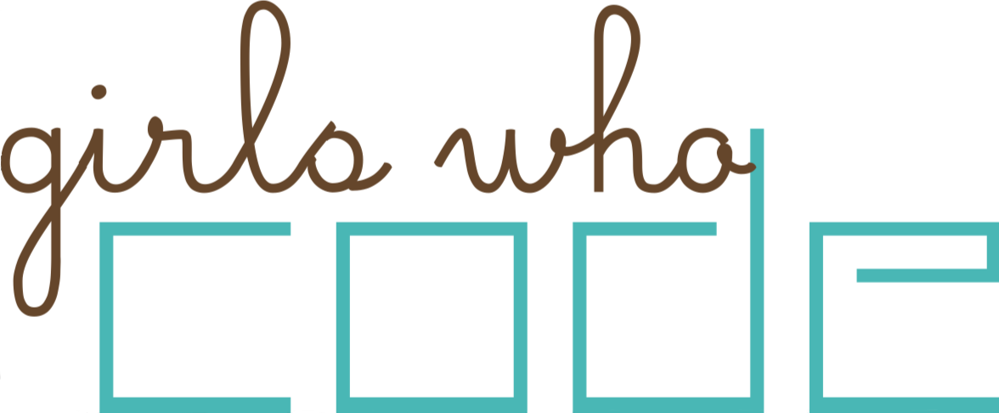

GET THE NEW iOS APP HERE
GET THE NEW iOS APP HERE
Andrea Gonzales and Sophie Houser are high school students in NYC. We met this summer at Girls Who Code (@ IAC), an organization trying to close the gender gap in tech, where we cultivated our love of coding. This is our final project for the program.
This winter we worked with Pivotal Labs to create a new and improved iOS version of Tampon Run. A big thank you to our Pivotal Labs team and to Drew Joy for composing the original sound and music! Also thank you Nihal Mehta, Reshma Saujani, Girls Who Code and Eniac Ventures for all your help and support!
Contact us at tamponrun@gmail.com
